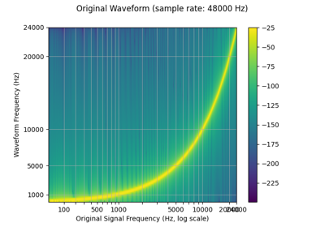
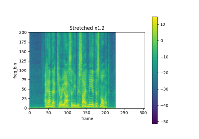
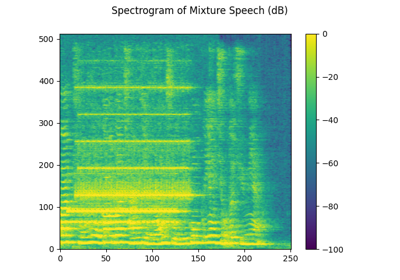
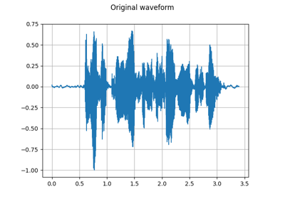

torchaudio.transforms¶
Transforms are common audio transforms. They can be chained together using torch.nn.Sequential
Utility¶
AmplitudeToDB¶
-
class
torchaudio.transforms.AmplitudeToDB(stype: str = 'power', top_db: Optional[float] = None)[source]¶ Turn a tensor from the power/amplitude scale to the decibel scale.
This output depends on the maximum value in the input tensor, and so may return different values for an audio clip split into snippets vs. a a full clip.
- Parameters
-
forward(x: torch.Tensor) → torch.Tensor[source]¶ Numerically stable implementation from Librosa.
https://librosa.org/doc/latest/generated/librosa.amplitude_to_db.html
- Parameters
x (Tensor) – Input tensor before being converted to decibel scale.
- Returns
Output tensor in decibel scale.
- Return type
Tensor
MelScale¶
-
class
torchaudio.transforms.MelScale(n_mels: int = 128, sample_rate: int = 16000, f_min: float = 0.0, f_max: Optional[float] = None, n_stft: int = 201, norm: Optional[str] = None, mel_scale: str = 'htk')[source]¶ Turn a normal STFT into a mel frequency STFT with triangular filter banks.
- Parameters
n_mels (int, optional) – Number of mel filterbanks. (Default:
128)sample_rate (int, optional) – Sample rate of audio signal. (Default:
16000)f_min (float, optional) – Minimum frequency. (Default:
0.)f_max (float or None, optional) – Maximum frequency. (Default:
sample_rate // 2)n_stft (int, optional) – Number of bins in STFT. See
n_fftinSpectrogram. (Default:201)norm (str or None, optional) – If
'slaney', divide the triangular mel weights by the width of the mel band (area normalization). (Default:None)mel_scale (str, optional) – Scale to use:
htkorslaney. (Default:htk)
See also
torchaudio.functional.melscale_fbanks()- The function used to generate the filter banks.-
forward(specgram: torch.Tensor) → torch.Tensor[source]¶ - Parameters
specgram (Tensor) – A spectrogram STFT of dimension (…, freq, time).
- Returns
Mel frequency spectrogram of size (…,
n_mels, time).- Return type
Tensor
InverseMelScale¶
-
class
torchaudio.transforms.InverseMelScale(n_stft: int, n_mels: int = 128, sample_rate: int = 16000, f_min: float = 0.0, f_max: Optional[float] = None, max_iter: int = 100000, tolerance_loss: float = 1e-05, tolerance_change: float = 1e-08, sgdargs: Optional[dict] = None, norm: Optional[str] = None, mel_scale: str = 'htk')[source]¶ Estimate a STFT in normal frequency domain from mel frequency domain.
It minimizes the euclidian norm between the input mel-spectrogram and the product between the estimated spectrogram and the filter banks using SGD.
- Parameters
n_stft (int) – Number of bins in STFT. See
n_fftinSpectrogram.n_mels (int, optional) – Number of mel filterbanks. (Default:
128)sample_rate (int, optional) – Sample rate of audio signal. (Default:
16000)f_min (float, optional) – Minimum frequency. (Default:
0.)f_max (float or None, optional) – Maximum frequency. (Default:
sample_rate // 2)max_iter (int, optional) – Maximum number of optimization iterations. (Default:
100000)tolerance_loss (float, optional) – Value of loss to stop optimization at. (Default:
1e-5)tolerance_change (float, optional) – Difference in losses to stop optimization at. (Default:
1e-8)sgdargs (dict or None, optional) – Arguments for the SGD optimizer. (Default:
None)norm (str or None, optional) – If ‘slaney’, divide the triangular mel weights by the width of the mel band (area normalization). (Default:
None)mel_scale (str, optional) – Scale to use:
htkorslaney. (Default:htk)
-
forward(melspec: torch.Tensor) → torch.Tensor[source]¶ - Parameters
melspec (Tensor) – A Mel frequency spectrogram of dimension (…,
n_mels, time)- Returns
Linear scale spectrogram of size (…, freq, time)
- Return type
Tensor
MuLawEncoding¶
-
class
torchaudio.transforms.MuLawEncoding(quantization_channels: int = 256)[source]¶ Encode signal based on mu-law companding.
For more info see the Wikipedia Entry
This algorithm assumes the signal has been scaled to between -1 and 1 and returns a signal encoded with values from 0 to quantization_channels - 1
- Parameters
quantization_channels (int, optional) – Number of channels. (Default:
256)
- Example
>>> waveform, sample_rate = torchaudio.load('test.wav', normalize=True) >>> transform = torchaudio.transforms.MuLawEncoding(quantization_channels=512) >>> mulawtrans = transform(waveform)
-
forward(x: torch.Tensor) → torch.Tensor[source]¶ - Parameters
x (Tensor) – A signal to be encoded.
- Returns
An encoded signal.
- Return type
Tensor
MuLawDecoding¶
-
class
torchaudio.transforms.MuLawDecoding(quantization_channels: int = 256)[source]¶ Decode mu-law encoded signal.
For more info see the Wikipedia Entry
This expects an input with values between 0 and
quantization_channels - 1and returns a signal scaled between -1 and 1.- Parameters
quantization_channels (int, optional) – Number of channels. (Default:
256)
- Example
>>> waveform, sample_rate = torchaudio.load('test.wav', normalize=True) >>> transform = torchaudio.transforms.MuLawDecoding(quantization_channels=512) >>> mulawtrans = transform(waveform)
-
forward(x_mu: torch.Tensor) → torch.Tensor[source]¶ - Parameters
x_mu (Tensor) – A mu-law encoded signal which needs to be decoded.
- Returns
The signal decoded.
- Return type
Tensor
Resample¶
-
class
torchaudio.transforms.Resample(orig_freq: int = 16000, new_freq: int = 16000, resampling_method: str = 'sinc_interpolation', lowpass_filter_width: int = 6, rolloff: float = 0.99, beta: Optional[float] = None, *, dtype: Optional[torch.dtype] = None)[source]¶ Resample a signal from one frequency to another. A resampling method can be given.
Note
If resampling on waveforms of higher precision than float32, there may be a small loss of precision because the kernel is cached once as float32. If high precision resampling is important for your application, the functional form will retain higher precision, but run slower because it does not cache the kernel. Alternatively, you could rewrite a transform that caches a higher precision kernel.
- Parameters
orig_freq (int, optional) – The original frequency of the signal. (Default:
16000)new_freq (int, optional) – The desired frequency. (Default:
16000)resampling_method (str, optional) – The resampling method to use. Options: [
sinc_interpolation,kaiser_window] (Default:'sinc_interpolation')lowpass_filter_width (int, optional) – Controls the sharpness of the filter, more == sharper but less efficient. (Default:
6)rolloff (float, optional) – The roll-off frequency of the filter, as a fraction of the Nyquist. Lower values reduce anti-aliasing, but also reduce some of the highest frequencies. (Default:
0.99)beta (float or None, optional) – The shape parameter used for kaiser window.
dtype (torch.device, optional) – Determnines the precision that resampling kernel is pre-computed and cached. If not provided, kernel is computed with
torch.float64then cached astorch.float32. If you need higher precision, providetorch.float64, and the pre-computed kernel is computed and cached astorch.float64. If you use resample with lower precision, then instead of providing this providing this argument, please useResample.to(dtype), so that the kernel generation is still carried out ontorch.float64.
- Example
>>> waveform, sample_rate = torchaudio.load('test.wav', normalize=True) >>> transform = transforms.Resample(sample_rate, sample_rate/10) >>> waveform = transform(waveform)
- Tutorials using
Resample: Speech Recognition with Wav2Vec2
Speech Recognition with Wav2Vec2Audio Resampling
-
forward(waveform: torch.Tensor) → torch.Tensor[source]¶ - Parameters
waveform (Tensor) – Tensor of audio of dimension (…, time).
- Returns
Output signal of dimension (…, time).
- Return type
Tensor
FrequencyMasking¶
-
class
torchaudio.transforms.FrequencyMasking(freq_mask_param: int, iid_masks: bool = False)[source]¶ Apply masking to a spectrogram in the frequency domain.
Proposed in SpecAugment [1].
- Parameters
- Example
>>> spectrogram = torchaudio.transforms.Spectrogram() >>> masking = torchaudio.transforms.FrequencyMasking(freq_mask_param=80) >>> >>> original = spectrogram(waveform) >>> masked = masking(original)


- Tutorials using
FrequencyMasking: - Audio Feature Augmentation
-
forward(specgram: torch.Tensor, mask_value: float = 0.0) → torch.Tensor¶ - Parameters
specgram (Tensor) – Tensor of dimension (…, freq, time).
mask_value (float) – Value to assign to the masked columns.
- Returns
Masked spectrogram of dimensions (…, freq, time).
- Return type
Tensor
TimeMasking¶
-
class
torchaudio.transforms.TimeMasking(time_mask_param: int, iid_masks: bool = False, p: float = 1.0)[source]¶ Apply masking to a spectrogram in the time domain.
Proposed in SpecAugment [1].
- Parameters
time_mask_param (int) – maximum possible length of the mask. Indices uniformly sampled from [0, time_mask_param).
iid_masks (bool, optional) – whether to apply different masks to each example/channel in the batch. (Default:
False) This option is applicable only when the input tensor is 4D.p (float, optional) – maximum proportion of time steps that can be masked. Must be within range [0.0, 1.0]. (Default: 1.0)
- Example
>>> spectrogram = torchaudio.transforms.Spectrogram() >>> masking = torchaudio.transforms.TimeMasking(time_mask_param=80) >>> >>> original = spectrogram(waveform) >>> masked = masking(original)


- Tutorials using
TimeMasking: - Audio Feature Augmentation
-
forward(specgram: torch.Tensor, mask_value: float = 0.0) → torch.Tensor¶ - Parameters
specgram (Tensor) – Tensor of dimension (…, freq, time).
mask_value (float) – Value to assign to the masked columns.
- Returns
Masked spectrogram of dimensions (…, freq, time).
- Return type
Tensor
TimeStretch¶
-
class
torchaudio.transforms.TimeStretch(hop_length: Optional[int] = None, n_freq: int = 201, fixed_rate: Optional[float] = None)[source]¶ Stretch stft in time without modifying pitch for a given rate.
Proposed in SpecAugment [1].
- Parameters
hop_length (int or None, optional) – Length of hop between STFT windows. (Default:
win_length // 2)n_freq (int, optional) – number of filter banks from stft. (Default:
201)fixed_rate (float or None, optional) – rate to speed up or slow down by. If None is provided, rate must be passed to the forward method. (Default:
None)
- Example
>>> spectrogram = torchaudio.transforms.Spectrogram() >>> stretch = torchaudio.transforms.TimeStretch() >>> >>> original = spectrogram(waveform) >>> streched_1_2 = stretch(original, 1.2) >>> streched_0_9 = stretch(original, 0.9)


- Tutorials using
TimeStretch: - Audio Feature Augmentation
-
forward(complex_specgrams: torch.Tensor, overriding_rate: Optional[float] = None) → torch.Tensor[source]¶ - Parameters
- Returns
Stretched spectrogram. The resulting tensor is of the same dtype as the input spectrogram, but the number of frames is changed to
ceil(num_frame / rate).- Return type
Tensor
Fade¶
-
class
torchaudio.transforms.Fade(fade_in_len: int = 0, fade_out_len: int = 0, fade_shape: str = 'linear')[source]¶ Add a fade in and/or fade out to an waveform.
- Parameters
fade_in_len (int, optional) – Length of fade-in (time frames). (Default:
0)fade_out_len (int, optional) – Length of fade-out (time frames). (Default:
0)fade_shape (str, optional) – Shape of fade. Must be one of: “quarter_sine”,
"half_sine","linear","logarithmic","exponential". (Default:"linear")
- Example
>>> waveform, sample_rate = torchaudio.load('test.wav', normalize=True) >>> transform = transforms.Fade(fade_in_len=sample_rate, fade_out_len=2 * sample_rate, fade_shape='linear') >>> faded_waveform = transform(waveform)
-
forward(waveform: torch.Tensor) → torch.Tensor[source]¶ - Parameters
waveform (Tensor) – Tensor of audio of dimension (…, time).
- Returns
Tensor of audio of dimension (…, time).
- Return type
Tensor
Vol¶
-
class
torchaudio.transforms.Vol(gain: float, gain_type: str = 'amplitude')[source]¶ Add a volume to an waveform.
- Parameters
gain (float) – Interpreted according to the given gain_type: If
gain_type=amplitude,gainis a positive amplitude ratio. Ifgain_type=power,gainis a power (voltage squared). Ifgain_type=db,gainis in decibels.gain_type (str, optional) – Type of gain. One of:
amplitude,power,db(Default:amplitude)
-
forward(waveform: torch.Tensor) → torch.Tensor[source]¶ - Parameters
waveform (Tensor) – Tensor of audio of dimension (…, time).
- Returns
Tensor of audio of dimension (…, time).
- Return type
Tensor
Feature Extractions¶
Spectrogram¶
-
class
torchaudio.transforms.Spectrogram(n_fft: int = 400, win_length: Optional[int] = None, hop_length: Optional[int] = None, pad: int = 0, window_fn: Callable[[...], torch.Tensor] = <built-in method hann_window of type object>, power: Optional[float] = 2.0, normalized: bool = False, wkwargs: Optional[dict] = None, center: bool = True, pad_mode: str = 'reflect', onesided: bool = True, return_complex: Optional[bool] = None)[source]¶ Create a spectrogram from a audio signal.
- Parameters
n_fft (int, optional) – Size of FFT, creates
n_fft // 2 + 1bins. (Default:400)win_length (int or None, optional) – Window size. (Default:
n_fft)hop_length (int or None, optional) – Length of hop between STFT windows. (Default:
win_length // 2)pad (int, optional) – Two sided padding of signal. (Default:
0)window_fn (Callable[.., Tensor], optional) – A function to create a window tensor that is applied/multiplied to each frame/window. (Default:
torch.hann_window)power (float or None, optional) – Exponent for the magnitude spectrogram, (must be > 0) e.g., 1 for energy, 2 for power, etc. If None, then the complex spectrum is returned instead. (Default:
2)normalized (bool, optional) – Whether to normalize by magnitude after stft. (Default:
False)wkwargs (dict or None, optional) – Arguments for window function. (Default:
None)center (bool, optional) – whether to pad
waveformon both sides so that the \(t\)-th frame is centered at time \(t \times \text{hop\_length}\). (Default:True)pad_mode (string, optional) – controls the padding method used when
centerisTrue. (Default:"reflect")onesided (bool, optional) – controls whether to return half of results to avoid redundancy (Default:
True)return_complex (bool, optional) – Deprecated and not used.
- Example
>>> waveform, sample_rate = torchaudio.load('test.wav', normalize=True) >>> transform = torchaudio.transforms.Spectrogram(n_fft=800) >>> spectrogram = transform(waveform)
- Tutorials using
Spectrogram: - Audio Feature Augmentation
Speech Enhancement with MVDR Beamforming
Speech Enhancement with MVDR BeamformingAudio Feature Extractions
-
forward(waveform: torch.Tensor) → torch.Tensor[source]¶ - Parameters
waveform (Tensor) – Tensor of audio of dimension (…, time).
- Returns
Dimension (…, freq, time), where freq is
n_fft // 2 + 1wheren_fftis the number of Fourier bins, and time is the number of window hops (n_frame).- Return type
Tensor
InverseSpectrogram¶
-
class
torchaudio.transforms.InverseSpectrogram(n_fft: int = 400, win_length: Optional[int] = None, hop_length: Optional[int] = None, pad: int = 0, window_fn: Callable[[...], torch.Tensor] = <built-in method hann_window of type object>, normalized: bool = False, wkwargs: Optional[dict] = None, center: bool = True, pad_mode: str = 'reflect', onesided: bool = True)[source]¶ Create an inverse spectrogram to recover an audio signal from a spectrogram.
- Parameters
n_fft (int, optional) – Size of FFT, creates
n_fft // 2 + 1bins. (Default:400)win_length (int or None, optional) – Window size. (Default:
n_fft)hop_length (int or None, optional) – Length of hop between STFT windows. (Default:
win_length // 2)pad (int, optional) – Two sided padding of signal. (Default:
0)window_fn (Callable[.., Tensor], optional) – A function to create a window tensor that is applied/multiplied to each frame/window. (Default:
torch.hann_window)normalized (bool, optional) – Whether the spectrogram was normalized by magnitude after stft. (Default:
False)wkwargs (dict or None, optional) – Arguments for window function. (Default:
None)center (bool, optional) – whether the signal in spectrogram was padded on both sides so that the \(t\)-th frame is centered at time \(t \times \text{hop\_length}\). (Default:
True)pad_mode (string, optional) – controls the padding method used when
centerisTrue. (Default:"reflect")onesided (bool, optional) – controls whether spectrogram was used to return half of results to avoid redundancy (Default:
True)
- Example
>>> batch, freq, time = 2, 257, 100 >>> length = 25344 >>> spectrogram = torch.randn(batch, freq, time, dtype=torch.cdouble) >>> transform = transforms.InverseSpectrogram(n_fft=512) >>> waveform = transform(spectrogram, length)
- Tutorials using
InverseSpectrogram: Speech Enhancement with MVDR Beamforming
Speech Enhancement with MVDR Beamforming
-
forward(spectrogram: torch.Tensor, length: Optional[int] = None) → torch.Tensor[source]¶
MelSpectrogram¶
-
class
torchaudio.transforms.MelSpectrogram(sample_rate: int = 16000, n_fft: int = 400, win_length: Optional[int] = None, hop_length: Optional[int] = None, f_min: float = 0.0, f_max: Optional[float] = None, pad: int = 0, n_mels: int = 128, window_fn: Callable[[...], torch.Tensor] = <built-in method hann_window of type object>, power: float = 2.0, normalized: bool = False, wkwargs: Optional[dict] = None, center: bool = True, pad_mode: str = 'reflect', onesided: bool = True, norm: Optional[str] = None, mel_scale: str = 'htk')[source]¶ Create MelSpectrogram for a raw audio signal.
This is a composition of
torchaudio.transforms.Spectrogram()and andtorchaudio.transforms.MelScale().- Sources
- Parameters
sample_rate (int, optional) – Sample rate of audio signal. (Default:
16000)n_fft (int, optional) – Size of FFT, creates
n_fft // 2 + 1bins. (Default:400)win_length (int or None, optional) – Window size. (Default:
n_fft)hop_length (int or None, optional) – Length of hop between STFT windows. (Default:
win_length // 2)f_min (float, optional) – Minimum frequency. (Default:
0.)f_max (float or None, optional) – Maximum frequency. (Default:
None)pad (int, optional) – Two sided padding of signal. (Default:
0)n_mels (int, optional) – Number of mel filterbanks. (Default:
128)window_fn (Callable[.., Tensor], optional) – A function to create a window tensor that is applied/multiplied to each frame/window. (Default:
torch.hann_window)power (float, optional) – Exponent for the magnitude spectrogram, (must be > 0) e.g., 1 for energy, 2 for power, etc. (Default:
2)normalized (bool, optional) – Whether to normalize by magnitude after stft. (Default:
False)wkwargs (Dict[.., ..] or None, optional) – Arguments for window function. (Default:
None)center (bool, optional) – whether to pad
waveformon both sides so that the \(t\)-th frame is centered at time \(t \times \text{hop\_length}\). (Default:True)pad_mode (string, optional) – controls the padding method used when
centerisTrue. (Default:"reflect")onesided (bool, optional) – controls whether to return half of results to avoid redundancy. (Default:
True)norm (str or None, optional) – If ‘slaney’, divide the triangular mel weights by the width of the mel band (area normalization). (Default:
None)mel_scale (str, optional) – Scale to use:
htkorslaney. (Default:htk)
- Example
>>> waveform, sample_rate = torchaudio.load('test.wav', normalize=True) >>> transform = transforms.MelSpectrogram(sample_rate) >>> mel_specgram = transform(waveform) # (channel, n_mels, time)
See also
torchaudio.functional.melscale_fbanks()- The function used to generate the filter banks.- Tutorials using
MelSpectrogram: - Audio Feature Extractions
-
forward(waveform: torch.Tensor) → torch.Tensor[source]¶ - Parameters
waveform (Tensor) – Tensor of audio of dimension (…, time).
- Returns
Mel frequency spectrogram of size (…,
n_mels, time).- Return type
Tensor
GriffinLim¶
-
class
torchaudio.transforms.GriffinLim(n_fft: int = 400, n_iter: int = 32, win_length: Optional[int] = None, hop_length: Optional[int] = None, window_fn: Callable[[...], torch.Tensor] = <built-in method hann_window of type object>, power: float = 2.0, wkwargs: Optional[dict] = None, momentum: float = 0.99, length: Optional[int] = None, rand_init: bool = True)[source]¶ Compute waveform from a linear scale magnitude spectrogram using the Griffin-Lim transformation.
Implementation ported from librosa [2], A fast Griffin-Lim algorithm [3] and Signal estimation from modified short-time Fourier transform [4].
- Parameters
n_fft (int, optional) – Size of FFT, creates
n_fft // 2 + 1bins. (Default:400)n_iter (int, optional) – Number of iteration for phase recovery process. (Default:
32)win_length (int or None, optional) – Window size. (Default:
n_fft)hop_length (int or None, optional) – Length of hop between STFT windows. (Default:
win_length // 2)window_fn (Callable[.., Tensor], optional) – A function to create a window tensor that is applied/multiplied to each frame/window. (Default:
torch.hann_window)power (float, optional) – Exponent for the magnitude spectrogram, (must be > 0) e.g., 1 for energy, 2 for power, etc. (Default:
2)wkwargs (dict or None, optional) – Arguments for window function. (Default:
None)momentum (float, optional) – The momentum parameter for fast Griffin-Lim. Setting this to 0 recovers the original Griffin-Lim method. Values near 1 can lead to faster convergence, but above 1 may not converge. (Default:
0.99)length (int, optional) – Array length of the expected output. (Default:
None)rand_init (bool, optional) – Initializes phase randomly if True and to zero otherwise. (Default:
True)
- Example
>>> batch, freq, time = 2, 257, 100 >>> spectrogram = torch.randn(batch, freq, time) >>> transform = transforms.GriffinLim(n_fft=512) >>> waveform = transform(spectrogram)
- Tutorials using
GriffinLim: - Audio Feature Extractions
-
forward(specgram: torch.Tensor) → torch.Tensor[source]¶ - Parameters
specgram (Tensor) – A magnitude-only STFT spectrogram of dimension (…, freq, frames) where freq is
n_fft // 2 + 1.- Returns
waveform of (…, time), where time equals the
lengthparameter if given.- Return type
Tensor
MFCC¶
-
class
torchaudio.transforms.MFCC(sample_rate: int = 16000, n_mfcc: int = 40, dct_type: int = 2, norm: str = 'ortho', log_mels: bool = False, melkwargs: Optional[dict] = None)[source]¶ Create the Mel-frequency cepstrum coefficients from an audio signal.
By default, this calculates the MFCC on the DB-scaled Mel spectrogram. This is not the textbook implementation, but is implemented here to give consistency with librosa.
This output depends on the maximum value in the input spectrogram, and so may return different values for an audio clip split into snippets vs. a a full clip.
- Parameters
sample_rate (int, optional) – Sample rate of audio signal. (Default:
16000)n_mfcc (int, optional) – Number of mfc coefficients to retain. (Default:
40)dct_type (int, optional) – type of DCT (discrete cosine transform) to use. (Default:
2)norm (str, optional) – norm to use. (Default:
'ortho')log_mels (bool, optional) – whether to use log-mel spectrograms instead of db-scaled. (Default:
False)melkwargs (dict or None, optional) – arguments for MelSpectrogram. (Default:
None)
See also
torchaudio.functional.melscale_fbanks()- The function used to generate the filter banks.- Tutorials using
MFCC: - Audio Feature Extractions
-
forward(waveform: torch.Tensor) → torch.Tensor[source]¶ - Parameters
waveform (Tensor) – Tensor of audio of dimension (…, time).
- Returns
specgram_mel_db of size (…,
n_mfcc, time).- Return type
Tensor
LFCC¶
-
class
torchaudio.transforms.LFCC(sample_rate: int = 16000, n_filter: int = 128, f_min: float = 0.0, f_max: Optional[float] = None, n_lfcc: int = 40, dct_type: int = 2, norm: str = 'ortho', log_lf: bool = False, speckwargs: Optional[dict] = None)[source]¶ Create the linear-frequency cepstrum coefficients from an audio signal.
By default, this calculates the LFCC on the DB-scaled linear filtered spectrogram. This is not the textbook implementation, but is implemented here to give consistency with librosa.
This output depends on the maximum value in the input spectrogram, and so may return different values for an audio clip split into snippets vs. a a full clip.
- Parameters
sample_rate (int, optional) – Sample rate of audio signal. (Default:
16000)n_filter (int, optional) – Number of linear filters to apply. (Default:
128)n_lfcc (int, optional) – Number of lfc coefficients to retain. (Default:
40)f_min (float, optional) – Minimum frequency. (Default:
0.)f_max (float or None, optional) – Maximum frequency. (Default:
None)dct_type (int, optional) – type of DCT (discrete cosine transform) to use. (Default:
2)norm (str, optional) – norm to use. (Default:
'ortho')log_lf (bool, optional) – whether to use log-lf spectrograms instead of db-scaled. (Default:
False)speckwargs (dict or None, optional) – arguments for Spectrogram. (Default:
None)
See also
torchaudio.functional.linear_fbanks()- The function used to generate the filter banks.- Tutorials using
LFCC: - Audio Feature Extractions
-
forward(waveform: torch.Tensor) → torch.Tensor[source]¶ - Parameters
waveform (Tensor) – Tensor of audio of dimension (…, time).
- Returns
Linear Frequency Cepstral Coefficients of size (…,
n_lfcc, time).- Return type
Tensor
ComputeDeltas¶
-
class
torchaudio.transforms.ComputeDeltas(win_length: int = 5, mode: str = 'replicate')[source]¶ Compute delta coefficients of a tensor, usually a spectrogram.
See torchaudio.functional.compute_deltas for more details.
- Parameters
-
forward(specgram: torch.Tensor) → torch.Tensor[source]¶ - Parameters
specgram (Tensor) – Tensor of audio of dimension (…, freq, time).
- Returns
Tensor of deltas of dimension (…, freq, time).
- Return type
Tensor
PitchShift¶
-
class
torchaudio.transforms.PitchShift(sample_rate: int, n_steps: int, bins_per_octave: int = 12, n_fft: int = 512, win_length: Optional[int] = None, hop_length: Optional[int] = None, window_fn: Callable[[...], torch.Tensor] = <built-in method hann_window of type object>, wkwargs: Optional[dict] = None)[source]¶ Shift the pitch of a waveform by
n_stepssteps.- Parameters
waveform (Tensor) – The input waveform of shape (…, time).
sample_rate (int) – Sample rate of waveform.
n_steps (int) – The (fractional) steps to shift waveform.
bins_per_octave (int, optional) – The number of steps per octave (Default :
12).n_fft (int, optional) – Size of FFT, creates
n_fft // 2 + 1bins (Default:512).win_length (int or None, optional) – Window size. If None, then
n_fftis used. (Default:None).hop_length (int or None, optional) – Length of hop between STFT windows. If None, then
win_length // 4is used (Default:None).window (Tensor or None, optional) – Window tensor that is applied/multiplied to each frame/window. If None, then
torch.hann_window(win_length)is used (Default:None).
- Example
>>> waveform, sample_rate = torchaudio.load('test.wav', normalize=True) >>> transform = transforms.PitchShift(sample_rate, 4) >>> waveform_shift = transform(waveform) # (channel, time)
-
forward(waveform: torch.Tensor) → torch.Tensor[source]¶ - Parameters
waveform (Tensor) – Tensor of audio of dimension (…, time).
- Returns
The pitch-shifted audio of shape (…, time).
- Return type
Tensor
SlidingWindowCmn¶
-
class
torchaudio.transforms.SlidingWindowCmn(cmn_window: int = 600, min_cmn_window: int = 100, center: bool = False, norm_vars: bool = False)[source]¶ Apply sliding-window cepstral mean (and optionally variance) normalization per utterance.
- Parameters
cmn_window (int, optional) – Window in frames for running average CMN computation (int, default = 600)
min_cmn_window (int, optional) – Minimum CMN window used at start of decoding (adds latency only at start). Only applicable if center == false, ignored if center==true (int, default = 100)
center (bool, optional) – If true, use a window centered on the current frame (to the extent possible, modulo end effects). If false, window is to the left. (bool, default = false)
norm_vars (bool, optional) – If true, normalize variance to one. (bool, default = false)
-
forward(specgram: torch.Tensor) → torch.Tensor[source]¶ - Parameters
specgram (Tensor) – Tensor of spectrogram of dimension (…, time, freq).
- Returns
Tensor of spectrogram of dimension (…, time, freq).
- Return type
Tensor
SpectralCentroid¶
-
class
torchaudio.transforms.SpectralCentroid(sample_rate: int, n_fft: int = 400, win_length: Optional[int] = None, hop_length: Optional[int] = None, pad: int = 0, window_fn: Callable[[...], torch.Tensor] = <built-in method hann_window of type object>, wkwargs: Optional[dict] = None)[source]¶ Compute the spectral centroid for each channel along the time axis.
The spectral centroid is defined as the weighted average of the frequency values, weighted by their magnitude.
- Parameters
sample_rate (int) – Sample rate of audio signal.
n_fft (int, optional) – Size of FFT, creates
n_fft // 2 + 1bins. (Default:400)win_length (int or None, optional) – Window size. (Default:
n_fft)hop_length (int or None, optional) – Length of hop between STFT windows. (Default:
win_length // 2)pad (int, optional) – Two sided padding of signal. (Default:
0)window_fn (Callable[.., Tensor], optional) – A function to create a window tensor that is applied/multiplied to each frame/window. (Default:
torch.hann_window)wkwargs (dict or None, optional) – Arguments for window function. (Default:
None)
- Example
>>> waveform, sample_rate = torchaudio.load('test.wav', normalize=True) >>> transform = transforms.SpectralCentroid(sample_rate) >>> spectral_centroid = transform(waveform) # (channel, time)
-
forward(waveform: torch.Tensor) → torch.Tensor[source]¶ - Parameters
waveform (Tensor) – Tensor of audio of dimension (…, time).
- Returns
Spectral Centroid of size (…, time).
- Return type
Tensor
Vad¶
-
class
torchaudio.transforms.Vad(sample_rate: int, trigger_level: float = 7.0, trigger_time: float = 0.25, search_time: float = 1.0, allowed_gap: float = 0.25, pre_trigger_time: float = 0.0, boot_time: float = 0.35, noise_up_time: float = 0.1, noise_down_time: float = 0.01, noise_reduction_amount: float = 1.35, measure_freq: float = 20.0, measure_duration: Optional[float] = None, measure_smooth_time: float = 0.4, hp_filter_freq: float = 50.0, lp_filter_freq: float = 6000.0, hp_lifter_freq: float = 150.0, lp_lifter_freq: float = 2000.0)[source]¶ Voice Activity Detector. Similar to SoX implementation.
Attempts to trim silence and quiet background sounds from the ends of recordings of speech. The algorithm currently uses a simple cepstral power measurement to detect voice, so may be fooled by other things, especially music.
The effect can trim only from the front of the audio, so in order to trim from the back, the reverse effect must also be used.
- Parameters
sample_rate (int) – Sample rate of audio signal.
trigger_level (float, optional) – The measurement level used to trigger activity detection. This may need to be cahnged depending on the noise level, signal level, and other characteristics of the input audio. (Default: 7.0)
trigger_time (float, optional) – The time constant (in seconds) used to help ignore short bursts of sound. (Default: 0.25)
search_time (float, optional) – The amount of audio (in seconds) to search for quieter/shorter bursts of audio to include prior to the detected trigger point. (Default: 1.0)
allowed_gap (float, optional) – The allowed gap (in seconds) between quiteter/shorter bursts of audio to include prior to the detected trigger point. (Default: 0.25)
pre_trigger_time (float, optional) – The amount of audio (in seconds) to preserve before the trigger point and any found quieter/shorter bursts. (Default: 0.0)
boot_time (float, optional) The algorithm (internally) – estimation/reduction in order to detect the start of the wanted audio. This option sets the time for the initial noise estimate. (Default: 0.35)
noise_up_time (float, optional) – for when the noise level is increasing. (Default: 0.1)
noise_down_time (float, optional) – for when the noise level is decreasing. (Default: 0.01)
noise_reduction_amount (float, optional) – the detection algorithm (e.g. 0, 0.5, …). (Default: 1.35)
measure_freq (float, optional) – processing/measurements. (Default: 20.0)
measure_duration – (float or None, optional) Measurement duration. (Default: Twice the measurement period; i.e. with overlap.)
measure_smooth_time (float, optional) – spectral measurements. (Default: 0.4)
hp_filter_freq (float, optional) – at the input to the detector algorithm. (Default: 50.0)
lp_filter_freq (float, optional) – at the input to the detector algorithm. (Default: 6000.0)
hp_lifter_freq (float, optional) – in the detector algorithm. (Default: 150.0)
lp_lifter_freq (float, optional) – in the detector algorithm. (Default: 2000.0)
- Reference:
-
forward(waveform: torch.Tensor) → torch.Tensor[source]¶ - Parameters
waveform (Tensor) – Tensor of audio of dimension (channels, time) or (time) Tensor of shape (channels, time) is treated as a multi-channel recording of the same event and the resulting output will be trimmed to the earliest voice activity in any channel.
Loss¶
RNNTLoss¶
-
class
torchaudio.transforms.RNNTLoss(blank: int = - 1, clamp: float = - 1.0, reduction: str = 'mean')[source]¶ Compute the RNN Transducer loss from Sequence Transduction with Recurrent Neural Networks [5].
The RNN Transducer loss extends the CTC loss by defining a distribution over output sequences of all lengths, and by jointly modelling both input-output and output-output dependencies.
- Parameters
- Example
>>> # Hypothetical values >>> logits = torch.tensor([[[[0.1, 0.6, 0.1, 0.1, 0.1], >>> [0.1, 0.1, 0.6, 0.1, 0.1], >>> [0.1, 0.1, 0.2, 0.8, 0.1]], >>> [[0.1, 0.6, 0.1, 0.1, 0.1], >>> [0.1, 0.1, 0.2, 0.1, 0.1], >>> [0.7, 0.1, 0.2, 0.1, 0.1]]]], >>> dtype=torch.float32, >>> requires_grad=True) >>> targets = torch.tensor([[1, 2]], dtype=torch.int) >>> logit_lengths = torch.tensor([2], dtype=torch.int) >>> target_lengths = torch.tensor([2], dtype=torch.int) >>> transform = transforms.RNNTLoss(blank=0) >>> loss = transform(logits, targets, logit_lengths, target_lengths) >>> loss.backward()
-
forward(logits: torch.Tensor, targets: torch.Tensor, logit_lengths: torch.Tensor, target_lengths: torch.Tensor)[source]¶ - Parameters
logits (Tensor) – Tensor of dimension (batch, max seq length, max target length + 1, class) containing output from joiner
targets (Tensor) – Tensor of dimension (batch, max target length) containing targets with zero padded
logit_lengths (Tensor) – Tensor of dimension (batch) containing lengths of each sequence from encoder
target_lengths (Tensor) – Tensor of dimension (batch) containing lengths of targets for each sequence
- Returns
Loss with the reduction option applied. If
reductionis'none', then size (batch), otherwise scalar.- Return type
Tensor
Multi-channel¶
PSD¶
-
class
torchaudio.transforms.PSD(multi_mask: bool = False, normalize: bool = True, eps: float = 1e-15)[source]¶ Compute cross-channel power spectral density (PSD) matrix.
- Parameters
- Tutorials using
PSD: Speech Enhancement with MVDR Beamforming
Speech Enhancement with MVDR Beamforming
-
forward(specgram: torch.Tensor, mask: Optional[torch.Tensor] = None)[source]¶ - Parameters
specgram (torch.Tensor) – Multi-channel complex-valued spectrum. Tensor with dimensions (…, channel, freq, time).
mask (torch.Tensor or None, optional) – Time-Frequency mask for normalization. Tensor with dimensions (…, freq, time) if multi_mask is
Falseor with dimensions (…, channel, freq, time) if multi_mask isTrue. (Default:None)
- Returns
- The complex-valued PSD matrix of the input spectrum.
Tensor with dimensions (…, freq, channel, channel)
- Return type
MVDR¶
-
class
torchaudio.transforms.MVDR(ref_channel: int = 0, solution: str = 'ref_channel', multi_mask: bool = False, diag_loading: bool = True, diag_eps: float = 1e-07, online: bool = False)[source]¶ Minimum Variance Distortionless Response (MVDR) module that performs MVDR beamforming with Time-Frequency masks.
Based on https://github.com/espnet/espnet/blob/master/espnet2/enh/layers/beamformer.py
We provide three solutions of MVDR beamforming. One is based on reference channel selection [6] (
solution=ref_channel).\[\textbf{w}_{\text{MVDR}}(f) = \frac{{{\bf{\Phi}_{\textbf{NN}}^{-1}}(f){\bf{\Phi}_{\textbf{SS}}}}(f)} {\text{Trace}({{{\bf{\Phi}_{\textbf{NN}}^{-1}}(f) \bf{\Phi}_{\textbf{SS}}}(f))}}\bm{u} \]where \(\bf{\Phi}_{\textbf{SS}}\) and \(\bf{\Phi}_{\textbf{NN}}\) are the covariance matrices of speech and noise, respectively. \(\bf{u}\) is an one-hot vector to determine the reference channel.
The other two solutions are based on the steering vector (
solution=stv_evdorsolution=stv_power).\[\textbf{w}_{\text{MVDR}}(f) = \frac{{{\bf{\Phi}_{\textbf{NN}}^{-1}}(f){\bm{v}}(f)}} {{\bm{v}^{\mathsf{H}}}(f){\bf{\Phi}_{\textbf{NN}}^{-1}}(f){\bm{v}}(f)} \]where \(\bm{v}\) is the acoustic transfer function or the steering vector. \(.^{\mathsf{H}}\) denotes the Hermitian Conjugate operation.
We apply either eigenvalue decomposition [7] or the power method [8] to get the steering vector from the PSD matrix of speech.
After estimating the beamforming weight, the enhanced Short-time Fourier Transform (STFT) is obtained by
\[\hat{\bf{S}} = {\bf{w}^\mathsf{H}}{\bf{Y}}, {\bf{w}} \in \mathbb{C}^{M \times F} \]where \(\bf{Y}\) and \(\hat{\bf{S}}\) are the STFT of the multi-channel noisy speech and the single-channel enhanced speech, respectively.
For online streaming audio, we provide a recursive method [9] to update the PSD matrices of speech and noise, respectively.
- Parameters
ref_channel (int, optional) – Reference channel for beamforming. (Default:
0)solution (str, optional) – Solution to compute the MVDR beamforming weights. Options: [
ref_channel,stv_evd,stv_power]. (Default:ref_channel)multi_mask (bool, optional) – If
True, only accepts multi-channel Time-Frequency masks. (Default:False)diagonal_loading (bool, optional) – If
True, enables applying diagonal loading to the covariance matrix of the noise. (Default:True)diag_eps (float, optional) – The coefficient multiplied to the identity matrix for diagonal loading. It is only effective when
diagonal_loadingis set toTrue. (Default:1e-7)online (bool, optional) – If
True, updates the MVDR beamforming weights based on the previous covarience matrices. (Default:False)
Note
To improve the numerical stability, the input spectrogram will be converted to double precision (
torch.complex128ortorch.cdouble) dtype for internal computation. The output spectrogram is converted to the dtype of the input spectrogram to be compatible with other modules.Note
If you use
stv_evdsolution, the gradient of the same input may not be identical if the eigenvalues of the PSD matrix are not distinct (i.e. some eigenvalues are close or identical).-
forward(specgram: torch.Tensor, mask_s: torch.Tensor, mask_n: Optional[torch.Tensor] = None) → torch.Tensor[source]¶ Perform MVDR beamforming.
- Parameters
specgram (torch.Tensor) – Multi-channel complex-valued spectrum. Tensor with dimensions (…, channel, freq, time)
mask_s (torch.Tensor) – Time-Frequency mask of target speech. Tensor with dimensions (…, freq, time) if multi_mask is
Falseor with dimensions (…, channel, freq, time) if multi_mask isTrue.mask_n (torch.Tensor or None, optional) – Time-Frequency mask of noise. Tensor with dimensions (…, freq, time) if multi_mask is
Falseor with dimensions (…, channel, freq, time) if multi_mask isTrue. (Default: None)
- Returns
Single-channel complex-valued enhanced spectrum with dimensions (…, freq, time).
- Return type
RTFMVDR¶
-
class
torchaudio.transforms.RTFMVDR[source]¶ Minimum Variance Distortionless Response (MVDR [10]) module based on the relative transfer function (RTF) and power spectral density (PSD) matrix of noise.
Given the multi-channel complex-valued spectrum \(\textbf{Y}\), the relative transfer function (RTF) matrix or the steering vector of target speech \(\bm{v}\), the PSD matrix of noise \(\bf{\Phi}_{\textbf{NN}}\), and a one-hot vector that represents the reference channel \(\bf{u}\), the module computes the single-channel complex-valued spectrum of the enhanced speech \(\hat{\textbf{S}}\). The formula is defined as:
\[\hat{\textbf{S}}(f) = \textbf{w}_{\text{bf}}(f)^{\mathsf{H}} \textbf{Y}(f) \]where \(\textbf{w}_{\text{bf}}(f)\) is the MVDR beamforming weight for the \(f\)-th frequency bin, \((.)^{\mathsf{H}}\) denotes the Hermitian Conjugate operation.
The beamforming weight is computed by:
\[\textbf{w}_{\text{MVDR}}(f) = \frac{{{\bf{\Phi}_{\textbf{NN}}^{-1}}(f){\bm{v}}(f)}} {{\bm{v}^{\mathsf{H}}}(f){\bf{\Phi}_{\textbf{NN}}^{-1}}(f){\bm{v}}(f)} \]- Tutorials using
RTFMVDR: Speech Enhancement with MVDR Beamforming
Speech Enhancement with MVDR Beamforming
-
forward(specgram: torch.Tensor, rtf: torch.Tensor, psd_n: torch.Tensor, reference_channel: Union[int, torch.Tensor], diagonal_loading: bool = True, diag_eps: float = 1e-07, eps: float = 1e-08) → torch.Tensor[source]¶ - Parameters
specgram (torch.Tensor) – Multi-channel complex-valued spectrum. Tensor with dimensions (…, channel, freq, time)
rtf (torch.Tensor) – The complex-valued RTF vector of target speech. Tensor with dimensions (…, freq, channel).
psd_n (torch.Tensor) – The complex-valued power spectral density (PSD) matrix of noise. Tensor with dimensions (…, freq, channel, channel).
reference_channel (int or torch.Tensor) – Specifies the reference channel. If the dtype is
int, it represents the reference channel index. If the dtype istorch.Tensor, its shape is (…, channel), where thechanneldimension is one-hot.diagonal_loading (bool, optional) – If
True, enables applying diagonal loading topsd_n. (Default:True)diag_eps (float, optional) – The coefficient multiplied to the identity matrix for diagonal loading. It is only effective when
diagonal_loadingis set toTrue. (Default:1e-7)eps (float, optional) – Value to add to the denominator in the beamforming weight formula. (Default:
1e-8)
- Returns
Single-channel complex-valued enhanced spectrum with dimensions (…, freq, time).
- Return type
- Tutorials using
SoudenMVDR¶
-
class
torchaudio.transforms.SoudenMVDR[source]¶ Minimum Variance Distortionless Response (MVDR [10]) module based on the method proposed by Souden et, al. [6].
Given the multi-channel complex-valued spectrum \(\textbf{Y}\), the power spectral density (PSD) matrix of target speech \(\bf{\Phi}_{\textbf{SS}}\), the PSD matrix of noise \(\bf{\Phi}_{\textbf{NN}}\), and a one-hot vector that represents the reference channel \(\bf{u}\), the module computes the single-channel complex-valued spectrum of the enhanced speech \(\hat{\textbf{S}}\). The formula is defined as:
\[\hat{\textbf{S}}(f) = \textbf{w}_{\text{bf}}(f)^{\mathsf{H}} \textbf{Y}(f) \]where \(\textbf{w}_{\text{bf}}(f)\) is the MVDR beamforming weight for the \(f\)-th frequency bin.
The beamforming weight is computed by:
\[\textbf{w}_{\text{MVDR}}(f) = \frac{{{\bf{\Phi}_{\textbf{NN}}^{-1}}(f){\bf{\Phi}_{\textbf{SS}}}}(f)} {\text{Trace}({{{\bf{\Phi}_{\textbf{NN}}^{-1}}(f) \bf{\Phi}_{\textbf{SS}}}(f))}}\bm{u} \]- Tutorials using
SoudenMVDR: Speech Enhancement with MVDR Beamforming
Speech Enhancement with MVDR Beamforming
-
forward(specgram: torch.Tensor, psd_s: torch.Tensor, psd_n: torch.Tensor, reference_channel: Union[int, torch.Tensor], diagonal_loading: bool = True, diag_eps: float = 1e-07, eps: float = 1e-08) → torch.Tensor[source]¶ - Parameters
specgram (torch.Tensor) – Multi-channel complex-valued spectrum. Tensor with dimensions (…, channel, freq, time).
psd_s (torch.Tensor) – The complex-valued power spectral density (PSD) matrix of target speech. Tensor with dimensions (…, freq, channel, channel).
psd_n (torch.Tensor) – The complex-valued power spectral density (PSD) matrix of noise. Tensor with dimensions (…, freq, channel, channel).
reference_channel (int or torch.Tensor) – Specifies the reference channel. If the dtype is
int, it represents the reference channel index. If the dtype istorch.Tensor, its shape is (…, channel), where thechanneldimension is one-hot.diagonal_loading (bool, optional) – If
True, enables applying diagonal loading topsd_n. (Default:True)diag_eps (float, optional) – The coefficient multiplied to the identity matrix for diagonal loading. It is only effective when
diagonal_loadingis set toTrue. (Default:1e-7)eps (float, optional) – Value to add to the denominator in the beamforming weight formula. (Default:
1e-8)
- Returns
Single-channel complex-valued enhanced spectrum with dimensions (…, freq, time).
- Return type
- Tutorials using
References¶
- 1(1,2,3)
Daniel S. Park, William Chan, Yu Zhang, Chung-Cheng Chiu, Barret Zoph, Ekin D. Cubuk, and Quoc V. Le. Specaugment: a simple data augmentation method for automatic speech recognition. Interspeech 2019, Sep 2019. URL: http://dx.doi.org/10.21437/Interspeech.2019-2680, doi:10.21437/interspeech.2019-2680.
- 2
Brian McFee, Colin Raffel, Dawen Liang, Daniel P.W. Ellis, Matt McVicar, Eric Battenberg, and Oriol Nieto. Librosa: Audio and Music Signal Analysis in Python. In Kathryn Huff and James Bergstra, editors, Proceedings of the 14th Python in Science Conference, 18 – 24. 2015. doi:10.25080/Majora-7b98e3ed-003.
- 3
Nathanaël Perraudin, Peter Balazs, and Peter L. Søndergaard. A fast griffin-lim algorithm. In 2013 IEEE Workshop on Applications of Signal Processing to Audio and Acoustics, volume, 1–4. 2013. doi:10.1109/WASPAA.2013.6701851.
- 4
D. Griffin and Jae Lim. Signal estimation from modified short-time fourier transform. In ICASSP ‘83. IEEE International Conference on Acoustics, Speech, and Signal Processing, volume 8, 804–807. 1983. doi:10.1109/ICASSP.1983.1172092.
- 5
Alex Graves. Sequence transduction with recurrent neural networks. 2012. arXiv:1211.3711.
- 6(1,2)
Mehrez Souden, Jacob Benesty, and Sofiene Affes. On optimal frequency-domain multichannel linear filtering for noise reduction. In IEEE Transactions on audio, speech, and language processing, volume 18, 260–276. IEEE, 2009.
- 7
Takuya Higuchi, Nobutaka Ito, Takuya Yoshioka, and Tomohiro Nakatani. Robust mvdr beamforming using time-frequency masks for online/offline asr in noise. In 2016 IEEE International Conference on Acoustics, Speech and Signal Processing (ICASSP), 5210–5214. IEEE, 2016.
- 8
RV Mises and Hilda Pollaczek-Geiringer. Praktische verfahren der gleichungsauflösung. ZAMM-Journal of Applied Mathematics and Mechanics/Zeitschrift für Angewandte Mathematik und Mechanik, 9(1):58–77, 1929.
- 9
Takuya Higuchi, Nobutaka Ito, Shoko Araki, Takuya Yoshioka, Marc Delcroix, and Tomohiro Nakatani. Online mvdr beamformer based on complex gaussian mixture model with spatial prior for noise robust asr. IEEE/ACM Transactions on Audio, Speech, and Language Processing, 25(4):780–793, 2017.
- 10(1,2)
Jack Capon. High-resolution frequency-wavenumber spectrum analysis. Proceedings of the IEEE, 57(8):1408–1418, 1969.